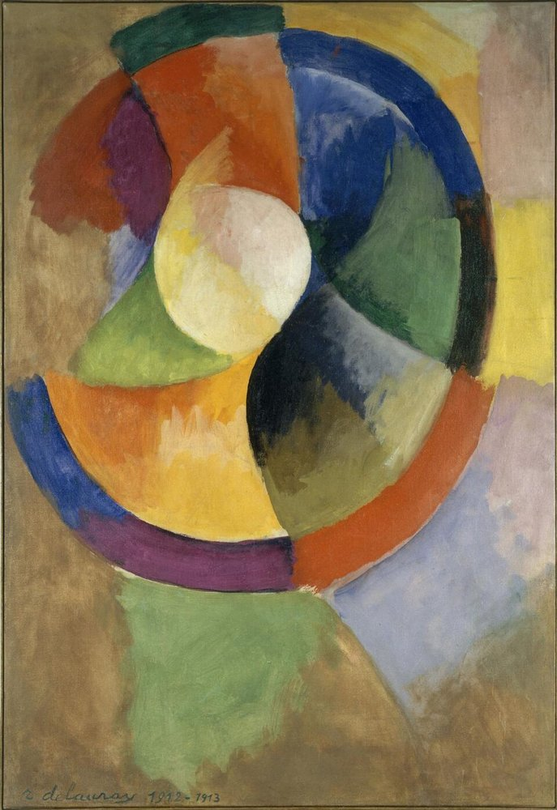

오르피즘 (Orphism)

쉽게 풀면
입체주의처럼 형태를 쪼개면서도, 회색 대신 화려하고 밝은 색깔의 원형 패턴을 써서 마치 음악처럼 리듬감 있게 그린 스타일이다.
왜 중요한가
입체주의의 분석적이고 무채색에 가까운 형태 해체에 순색의 강렬한 대비와 원형 구성을 결합함으로써, 추상 회화가 음악처럼 순수한 리듬과 색채의 감각적 효과만으로도 성립할 수 있음을 보여준 초기 추상미술의 중요한 갈래로 다루어진다. 로베르 들로네는 에펠탑과 원형 색면을 결합한 연작에서, 형태의 재현보다 색채 자체의 리듬과 대비가 만드는 시각적 감흥을 우선시했다.
핵심 주장
- 오르피즘(Orphism, 오르피슴)은 1912년 무렵 프랑스 화가 로베르 들로네와 소니아 들로네가 중심이 되어 입체주의의 형태 분해에 색채의 대비와 리듬을 결합한 회화 경향이다. 대상을 점점 덜 재현하고 색 자체가 구성의 주체가 되는 쪽으로 나아갔다.
- 이 이름은 시인 기욤 아폴리네르가 붙였다. 아폴리네르는 1912년 가을 ‘황금분할(Section d’Or)’ 전시 무렵의 강연과 이후 책 『입체파 화가들』(1913)에서 입체주의를 몇 갈래로 나누며 오르페우스의 음악에 빗대 들로네의 그림을 ‘오르피슴’이라 불렀다.
- 들로네는 색을 낱낱의 색점이 아니라 서로 영향을 주는 관계로 다루었고, 이를 ‘동시성(simultanéité)’이라는 말로 설명했다. 이 생각은 19세기 화학자 슈브뢸의 ‘동시 대비의 법칙’(1839)에서 영향을 받은 것으로 설명된다(동시 대비 참조).
- 대표작으로 들로네의 「창」 연작(1912), 「원형 형태」(1912~13), 소니아 들로네의 「전기 프리즘」(1914) 등이 자주 언급된다.
아폴리네르는 1912년 섹시옹 도르(Section d'Or) 전시 강연에서 프란티셰크 쿠프카의 순수 회화를 가리키며 이 말을 처음 썼고, 1913년 『입체파 화가들』에서 오르피즘을 화가가 시각적 현실에서 가져오지 않고 스스로 완전히 창조한 요소로 새로운 전체를 그리는 미술이라고 설명했다. 야수주의, 폴 시냐크와 샤를 앙리의 이론, 염료 화학자 미셸 외젠 슈브뢸의 색채 대비 이론에서 영향을 받았다. 입체주의에서 추상미술로 넘어가는 다리로 평가되며, 들로네 부부는 전깃불의 빛을 그렸고, 그림에서 빛이 뿜어져 나올 수 있다고 믿었다.
근거와 대표 연구
| 구분 | 입체주의 | 오르피즘 |
|---|---|---|
| 형태 | 대상을 여러 시점에서 분해하여 재구성 | 분해된 형태가 원형·곡선의 리듬으로 확장 |
| 색 | 회색·갈색 등 절제된 색조(분석적 입체주의 시기) | 순색의 밝은 대비가 구성의 중심 |
| 음악과의 관계 | 직접적 강조 없음 | 색의 ‘리듬’과 ‘화음’을 음악에 비유 |
들로네의 작업은 구상과 추상의 경계에 있는 것으로 평가된다. 「창」 연작에는 에펠탑이나 창문 같은 소재의 흔적이 남아 있고, 「원형 형태」에 이르면 소재가 거의 사라진다. 이 점이 입체주의에서 추상으로 넘어가는 다리로 이 사조를 설명하는 근거가 된다.
비판과 한계
- 이름의 문제: ‘오르피즘’은 아폴리네르가 붙인 말이며 들로네 자신은 이를 달가워하지 않았고 ‘동시주의’나 ‘순수 회화’ 같은 말로 자신의 작업을 설명했다고 전해진다.
- 범위의 모호함: 아폴리네르가 이 이름을 붙인 작가의 범위가 일정하지 않고(쿠프카, 피카비아 등이 함께 언급됨), 활동 기간도 1912~1914년 무렵으로 짧아 하나의 독립된 유파로 보기 어렵다는 지적이 있다.
- ‘최초의 추상’ 논쟁: 누가 먼저 추상 회화에 이르렀는가를 둘러싸고 칸딘스키, 쿠프카, 들로네 등에 대한 평가가 엇갈린다. 이 사조를 설명할 때 ‘최초’라는 표현은 신중해야 한다.
- 음악에 빗댄 서술은 비평적 수사이며, 색과 소리를 실제로 대응시켰다는 뜻은 아니다.
논문에서는 이렇게 쓰입니다
실제 논문에서
이 용어를 직접 쓴 국내 논문 문장은 아직 모으지 못했다. 모이는 대로 출처와 함께 싣는다.
예시 문장
아래 예문은 용어의 쓰임을 보이려고 만든 것으로, 실제 논문 문장이 아니다.
오르피즘은 입체주의적 구조와 생생한 동시대비 색채를 종합하여, 독립적이고 음악에 가까운 추상성을 지향했다는 뜻이다.
특정 사물이나 인물을 그리지 않고도, 오직 색과 원형 무늬의 리듬만으로 그림이 하나의 완결된 작품이 될 수 있음을 보여준 대표작이라는 뜻이다.
조금 더 깊게 보면
오르피즘이라는 명칭은 시인 아폴리네르가 붙인 것으로 들로네 부부 자신의 자칭이 아니었으며, 참여 작가의 범위와 지속 기간이 짧고 불분명해 하나의 독립된 유파로 명확히 규정하기 어렵다는 점이 미술사 서술에서 자주 지적된다. 기욤 아폴리네르가 이 명칭을 처음 사용하며 신화 속 오르페우스의 음악에 빗대어, 들로네의 회화가 시각적 형태보다 색채의 음악적 조화를 추구한다고 설명했다.
주의할 점
오르피즘이라는 명칭은 시인 아폴리네르가 붙인 것으로, 들로네 부부 자신은 이를 '동시주의(Simultanism)'라는 다른 용어로 부르길 선호했다는 점에 유의해야 한다.
오르피즘은 입체주의의 형태 분석에 순수한 색채의 리듬과 추상성을 결합한 경향으로, 대상의 재현을 완전히 포기하지 않은 초기 입체주의와 구별되는 색채 중심으로 나아간 입체주의의 한 갈래로 설명되는 경향이 있다. 다만 활동 범위와 기간이 짧아 독립된 유파로 보는 데는 이견이 있으므로, 분류는 신중히 하고 작품은 색채 자체를 주제로 삼은 실험으로 평가한다.
헷갈리기 쉬운 용어
| 용어 | 설명 |
|---|---|
| 오르피즘 | 입체주의의 분해에 순색 대비와 리듬을 결합한 1910년대 초 회화 경향 |
| 입체주의 | 대상을 여러 시점에서 분해·재구성하는 사조(피카소·브라크) |
| 동시 대비 | 인접한 색이 서로의 보이는 색을 바꾸는 지각 현상, 들로네의 이론적 바탕 |
참고 문헌
- Apollinaire, G. (1913). Les peintres cubistes: Méditations esthétiques. Eugène Figuière.
- Chevreul, M. E. (1839). De la loi du contraste simultané des couleurs et de l’assortiment des objets colorés. Pitois-Levrault.
- Buckberrough, S. A. (1982). Robert Delaunay: The Discovery of Simultaneity. UMI Research Press.
- Wikipedia contributors. (n.d.). Orphism (art). In Wikipedia, The Free Encyclopedia.
표의 기준값은 위 문헌에 따른 관례이고, 분야·학술지마다 기준이 다를 수 있다.